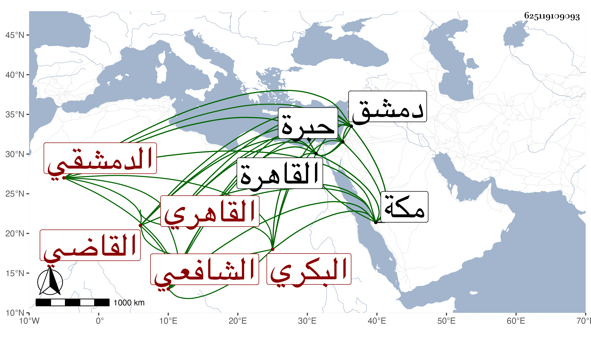

0902Sakhawi.DawLamic.ITO20230111-ara1.EIS1600.625119109093
Biography ID: 625119109093
630
علي بن أحمد بن محمد بن سليمان بن أبي بكر القاضي علاء الدين ويلقب في بلده بنور الدين بن الخواجا شهاب الدين البكري فيما قال الدمشقي ثم القاهري الشافعي الماضي أبوه والآتي ابن عمه عمر بن محمد ويعرف كل منهم بابن الصابوني نشأ كأبيه تاجرا فحفظ القرآن بل بلغني أنه جاور بمكة فى سنة إحدى وأربعين وأنه تلا فيه تجويدا على الزين بن عياش وأنه تولع بالنشاب حتى تميز فيه وقدم القاهرة على الظاهر خشقدم لاختصاصه به وبأبيه فولاه نظر الإسطبل في المحرم سنة ست وستين عوضا عن الشرف بن البقري ثم أضاف إليه نظر الأوقاف ولم يلبث أن رجع إلى بلاده فاستقر عوضه فيهما سعد الدين البكري كاتب العليق في شعبانها ثم عاد بعد يسير فقرره وكيل بيت المال وناظر الكسوة والجوالي في صفر التي تليها عوض الشرفي الأنصاري ثم ناظر البيمارستان عوض ابن المرخم ثم ناظر الأحباس ، ولا زال يترقى ويتأدب مع الناس ويحسن لمنقطعي العلماء وربما حضر إليه بعضهم للقراءة والتحديث كالعبادي والبهاء بن المصري وأبي العباس القدسي وقرأ علي بحضرته شيئا من تصانيفي والتمس مني حين نظره للجوالي جمع العهود فعملت له كراسة ووصل إلى من صلته شيء كثير سيما في سنة سبعين والتي بعدها وأنا بمكة حتى استقر في قضاء الشافعية بدمشق عوض الجمال الباعوني وفي نظر جيشها عوض البدري حسن بن المزلق وكلاهما في المحرم سنة سبعين وصار نظر الجوالي للكمالي بن ناظر الخاص والأحباس لابن الشرفي الأنصاري والبيمارستان لابن البقري ، ولم يسمح بمفارقة القاهرة بل استناب والده في علق وظيفة القضاء وابن عمه الزين عمر بن الشمس محمد في نظر الجيش ولم يعلم بإقامة متوليهما بالقاهرة ومباشرة نوابه لهما لأحد قبله ، واستمر كذلك إلى أن أمسكه الأشرف قايتباي في أواخر شوال سنة اثنتين وسبعين بدون سبب ظاهر ورسم عليه بطبقة الزمام وغيرها وأعاد ابن المزلق لنظر الجيش والخيضري للقضاء بل اعتقل والده هناك ثلاثة أشهر متصلة بموته الكائن في محرم التي تليها وكان ذلك باعثا على الحث في استخلاص المال بحيث ضرب صاحب الترجمة في ربيع الأول التالي له بقاعة الدهيشة على رجليه إلى أن أذعن للمطلوب منه وهو فيما قيل مائة ألف دينار وأورد من ذلك بالجهد ما أمكنه ثم في منتصف الشهر بعده سافر لدمشق مع السيفي جانبك الخاصكي للسعي في باقيه ، وأقام بالخليل مدة واستقر في نظر الخاص عقب البدري بن مزهر وتزايد تعبه وتحمله وهو لا يرحم وقام ببابه غير واحد ممن عم الضرر بهم كعبد الوهاب والصفدي وزاحم العصبات لاتفاقه مع الوزر في إضافة المواريث الحشرية إليه على قدر معين يحمل إليه وابتنى تربة بالقرب من جامع آل ملك ولما مات الجلال البكري دفنه بها .
